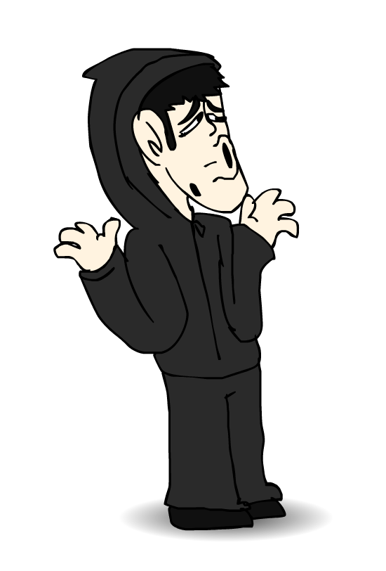

BIBLIA DE PRODUCCIÓN: OCTAVO A
OCTAVO A es una serie animada de comedia negra y humor satírico. Explora el caos de la adolescencia temprana en el entorno escolar chileno con la sensibilidad absurda e irreverente de producciones clásicas como South Park o Beavis and Butt-Head.
- Título: Octavo A
- Formato: Webserie animada (episodios de 5 a 11 minutos)
- Género: Comedia negra, Humor absurdo, Coming-of-age
- Audiencia objetiva: +16 años
- Lugar: Colegio "Américo Río Nuevo" (Institución ficticia)
Premisa: Tres estudiantes de 13 años pertenecientes al 8° A del Colegio Américo Río Nuevo pasan sus días desafiando la autoridad, metiéndose en problemas con los profesores, alimentando una rivalidad a muerte con varios compañeros del 8° B y sobrellevando las incoherencias de la pubertad. Entre dinámicas de aula absurdas, enamoramientos inapropiados con sus profesoras, odio visceral hacia el curso vecino y discusiones a garabato limpio en inspectoría, el trío busca sobrevivir al último año de enseñanza básica.
PERSONAJES PRINCIPALES

HÉCTOR (13 años)
Rol: El detonante del caos.
Personalidad: Joven autista, grosero e impulsivo. Posee un humor hiperactivo que se activa por las situaciones más absurdas; suele estallar en risas junto a Sebastián en los momentos menos oportunos. Posee muy poca tolerancia a la frustración y se enfurece rápido si lo molestan o le dicen algo que no le parece.
Lenguaje: Uso excesivo de "papú", "brother" y expresiones de internet como :v.
Rasgo físico: Orejas extremadamente grandes.
Estilo de pelea: Inicia las agresiones con palmadas rápidas; si llega al límite de la ira, recurre a puñetazos cerrados.
Curiosidad: Desarrolla un fetiche por los pies cada vez que se enamora de alguien.
SEBASTIÁN (13 años)
Rol: El elemento inestable.
Personalidad: Raro, sumamente sensible y llorón, pero contradictoriamente "choro" y grosero. Rompe en llanto a la menor provocación cuando se burlan de él, pero reacciona con violencia física hacia los demás.
Lenguaje: Si recibe noticias graves o de alta importancia, responde con un simple "A". Si lo hacen esperar demasiado, utiliza el silencio dramático o manda un "…".
Estilo de pelea: Especialista en dar palmadas fuertes y secas en la espalda ajena; en combate abierto usa puñetazos y patadas.
Curiosidad: Carece por completo de sentido de orientación. Si se le deja solo en un bosque —incluso con señales claras de salida— es capaz de perderse al punto de arriesgar la vida.
BENJAMÍN (13 años)
Rol: El mediador con doble vida / Presidente de Curso.
Personalidad: Proviene de un hogar humilde, pero es un mentiroso compulsivo que asegura poseer lujos inaccesibles o ítems imposibles en videojuegos. Es el líder nato para los trabajos escolares y el presidente del curso. Es el único del grupo con la madurez suficiente para cortar el desorden cuando la situación se sale de control.
Lenguaje: "Ya córtenla o le digo al profe Dani".
Estilo de pelea: Directo y pragmático; ataca únicamente con puñetazos y patadas, rechazando el uso de palmadas.
Curiosidad: Es el más adelantado en el terreno amoroso dentro del grupo, siendo el primero en estar cerca de conseguir novia.
Profesor Daniel
Asignatura: Educación Física / Profesor Jefe 8° A.
Dinámica: Sus chistes son notoriamente aburridos y carentes de gracia; Benjamín es el único alumno que se ríe de sus bromas para mantener su estatus. Daniel lo tiene como su estudiante favorito indiscutido.
Profesor Nicolás
Asignatura: Matemáticas.
Dinámica: Docente exigente y de carácter pesado ("jodido"). Suele molestar a Sebastián como una muestra torpe de cariño, algo que Sebastián comprende y no se toma a mal.
Profesora Yocelyn Salinas
Asignatura: Ciencias Naturales.
Dinámica: Docente con sobrepeso y temperamento explosivo si la interrumpen. Aunque intenta ser cariñosa molestando a sus alumnos en broma, el trío no entiende su intención y se toma sus comentarios de mala manera. Amiga cercana de Miss Yenny.
Miss Yenny
Asignatura: Inglés.
Dinámica: Profesora de baja estatura que viste faldas largas o casacas atadas a la cintura, además de botas o zapatillas blancas. De carácter estricto y sin paciencia: saca rutinariamente a los alumnos al pasillo para reprimirlos.
Profesor Hugo Inostrosa
Asignatura: Historia, Geografía y C.S.
Dinámica: Usa ropa antigua y lentes gruesos. Extremadamente irascible. Golpea con furia el teclado de la PC del aula cuando el proyector falla, desencadenando los ataques de risa de Héctor y Sebastián. Se dirige a los alumnos como "caballeros".
Inspector Cristián
Rol: Inspector General.
Dinámica: Hombre amargado y con nulo manejo de grupo. Cada vez que deriva al trío a la oficina por mala conducta, la reunión escala de inmediato a una discusión caótica llena de insultos de alto calibre.
- Guerra entre paralelos (8° A vs 8° B): Una de las principales fuentes de conflicto. Héctor, Sebastián y Benjamín le tienen un odio parido a varios compañeros del 8° B, lo que desencadena peleas de patio, sabotajes en las actividades del colegio y agarrones a combos entre los recreos.
- Tensión en el aula: El conflicto continuo nace del contraste entre las demandas académicas de profesores estrictos, la rivalidad con el curso de al lado y la absoluta inadaptación social y conducta irreverente del trío.
- Nota de producción: Los protagonistas no respetan a los profesores estrictos, dinamica clave que se manifestará en episodios específicos.